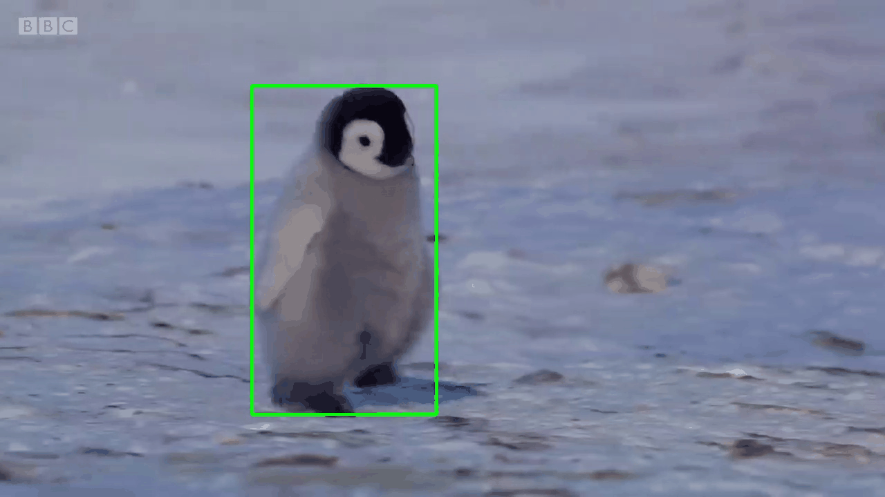

![[Your Name]](illustrations/my_photo.jpg)
About
My name is Kevin Helvig. I'm a researcher working on AI and computer vision for robotics at ONERA. I explore the use of non-conventional imaging techniques such as thermal imaging. My PhD thesis was about the use of infrared flying-spot laser thermography coupled with deep learning to identify defects on metallic surfaces, exploring the development of deep learning based sensor-fusion neural models through cross-attention approaches.


Publications
[2021-2024] PhD work
-
[2024] -
Apprentissage multi-capteurs pour le contrôle non destructif de matériaux
K. Helvig
Thesis manuscript, Université Paris-Saclay
Interests
Deep learning and AI enthusiast - Neuro-inspired AI explorer (Spiking neural networks, reservoir computing ...etc...) - Blender/Illustrator for scientific illustration

Contact
You can reach me by email at kevin.helvig@onera.fr.